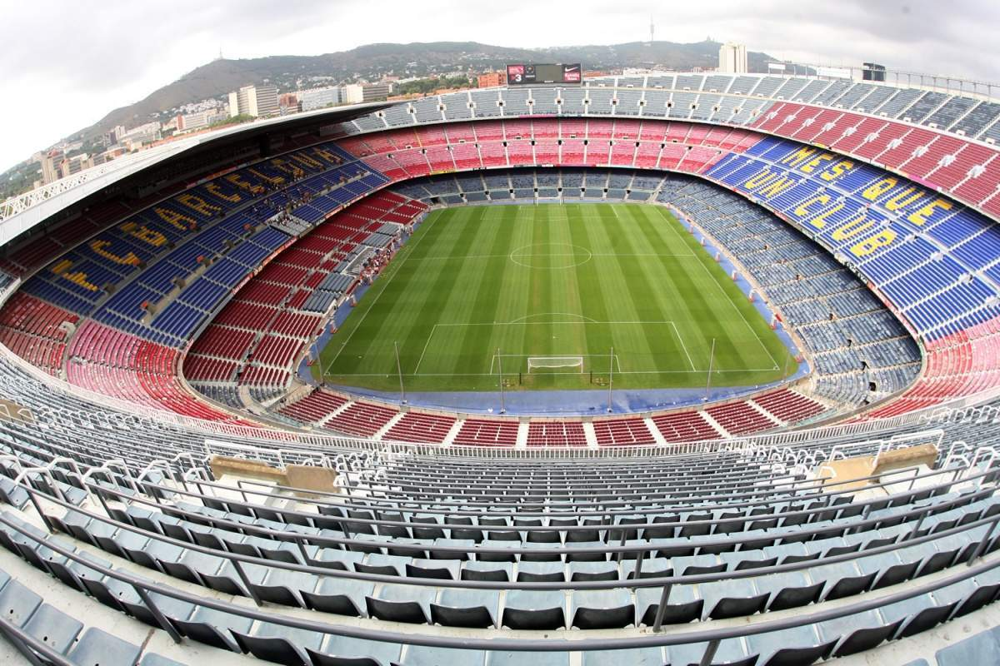

Historia
El Fútbol Club Barcelona, conocido popularmente como Barça es una entidad polideportiva con sede en
Barcelona,
España. Fue fundado como club de fútbol el 29 de noviembre de 1899 y registrado oficialmente el 5 de enero
de 1903.
Tanto el club como sus hinchas reciben el apelativo de «culers» (pronunciado culés),
y también, en referencia a sus colores, «azulgranas» o «blaugranas», tal como aparece en su himno,
el «cant del Barça», el cual en su segunda línea menciona «som la gent blaugrana» (en castellano, «somos la
gente azulgrana»).

Indumentaria
Los colores distintivos del F. C. Barcelona son el azul y el grana, de donde procede el sobrenombre
de «azulgrana» («blaugrana» en catalán) con el que se conoce a los jugadores y aficionados del club.
Estadio
El estadio del F. C. Barcelona es el Camp Nou, propiedad del propio club.
Inaugurado en 1957, tiene una capacidad de 99.354 espectadores,todos sentados. Es uno de los cuatro estadios de España catalogado como «Estadio Cinco Estrellas» por la UEFA, lo que lo habilita para acoger finales de la Liga de Campeones,
Supercopa de Europa y Copa de la UEFA, como ha sucedido en 15 ocasiones. Se encuentra en el barrio de Las Corts de Barcelona, junto a otras instalaciones del club, como el Mini Estadi (estadio del Barcelona B) y el
Palau Blaugrana, cancha del equipo de baloncesto.
En las instalaciones del Camp Nou se encuentra el Museo del F. C. Barcelona, el museo más visitado de Cataluña.
